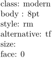
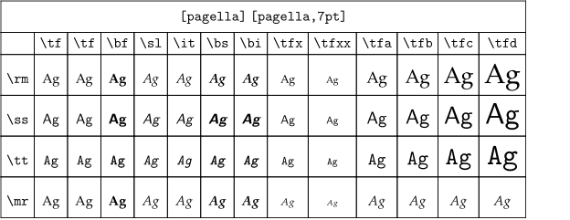
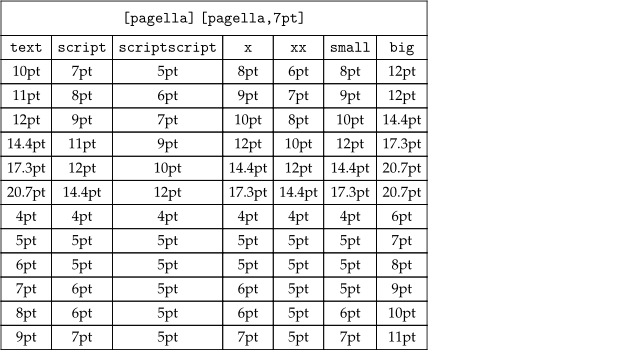
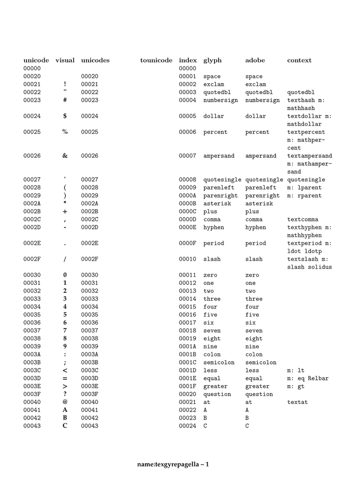
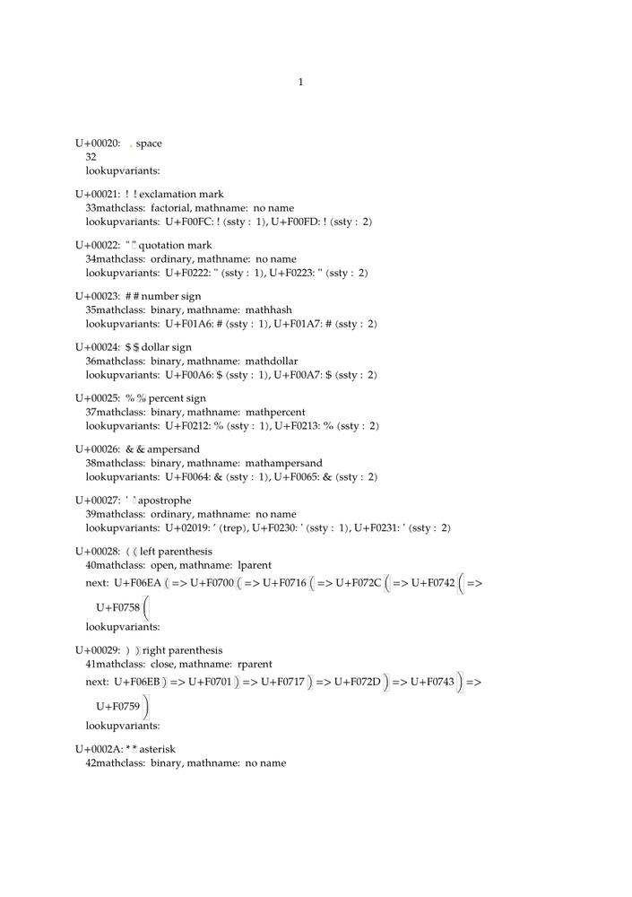
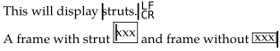
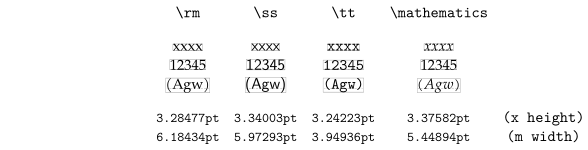
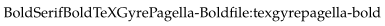

Contents
- 1 Basic information
- 2 \showbodyfont : actual bodyfont family with all variants
- 3 \showbodyfontenvironment : draws a table that shows which point sizes match the relative sizes
- 4 \showsymbolset[ symbolset name ] : shows all the symbols within a given symbol set
- 5 \ShowCompleteFont and \showmathcharacters
- 6 \showstruts : display struts (invisible placeholders for proper minimum line heights)
- 7 \showfontstrip : the current typeface combination, with roman, sans, math, and teletype families visualised, with x-heights and m widths.
- 8 \tracedfontname {Font Name} : Chain of synonyms for the given font name
Basic information
Source font-var.mkvi
-
% fontclass % modern dejavu % fontbody % ... 10pt 11pt 12pt ... % fontstyle % rm ss tt mm hw cg ... % fontalternative % tf bf sl it bs bi sc ... % fontsize % a b c d ... % fontface % 0=normal 1=text 2=script 3=scriptscript 4=x 5=xx (math are temporary) class: \fontclass\par body : \fontbody\par style: \fontstyle\par alternative: \fontalternative\par size: \fontsize\par face: \fontface\par
- 
\showbodyfont : actual bodyfont family with all variants
-
\showbodyfont[pagella,7pt]
- 
\showbodyfontenvironment : draws a table that shows which point sizes match the relative sizes
-
\showbodyfontenvironment[pagella,7pt]
- 
\showsymbolset [ symbolset name ] : shows all the symbols within a given symbol set
-
\showsymbolset[navigation 1]
-

\ShowCompleteFont and \showmathcharacters
\ShowCompleteFont from module fnt-10 : list of available chars of actual bodyfont encoding (for MkII, \showcharacters lists the available chars of actual bodyfont encoding )
-
\usemodule[fnt-10] \setupcolors[state=start] \starttext \ShowCompleteFont{name:texgyrepagella}{8pt}{1} \stoptext
- 
Then you can use \utfchar and/or \fontchar:
-
\definedfont[name:modern*default at 50pt] \utfchar{0x02660} or \utfchar{"02660} or \utfchar{"2660} or \fontchar{spade}
\showmathcharacters from module math-characters : list of all the available math (non-alphabetical) characters available in math, now including all the AMS characters.
-
\usemodule[math-characters] \setupcolors[state=start] \setupbodyfont[pagella,7pt] \starttext \showmathfontcharacters \stoptext
- 
\showstruts : display struts (invisible placeholders for proper minimum line heights)
(Make a better, slightly more complex example.)
-
\setupbodyfont[pagella,7pt] \framed[frame=off,align=normal]{\showstruts This will display \strut struts.\crlf A frame with strut \framed[strut=yes]{xxx} and frame without \framed[strut=no]{xxx}}
- 
\showfontstrip : the current typeface combination, with roman, sans, math, and teletype families visualised, with x-heights and m widths.
-
\setupbodyfont[pagella,7pt] \framed[frame=off]{\showfontstrip}
- 
\tracedfontname {Font Name} : Chain of synonyms for the given font name
-
\setupbodyfont[pagella,7pt] \framed[frame=off]{\tracedfontname{Bold}}
- 